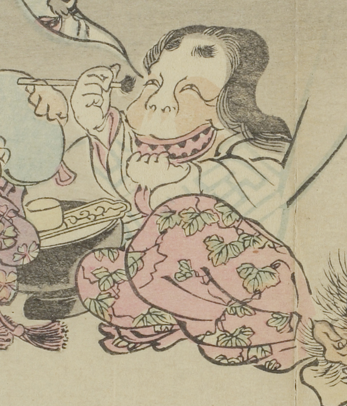

鉄漿を付ける女の化物。鏡の前に座り、左手で口を開けながら右手で鉄漿筆を持っている。脇には耳盥がある。
出典：親書誌：U426_nichibunken_0093：暁斎百鬼画談；ギョウサイヒャッキガダン／日付：2006／資源識別子：U426_nichibunken_0093_0026_0001
Copyright (c)2010- International Research Center for Japanese Studies, Kyoto, Japan. All rights reserved.